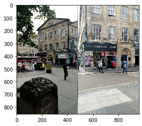
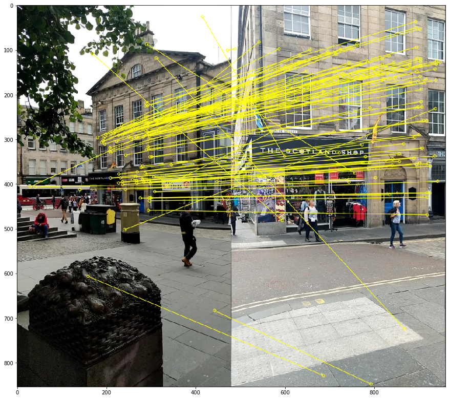
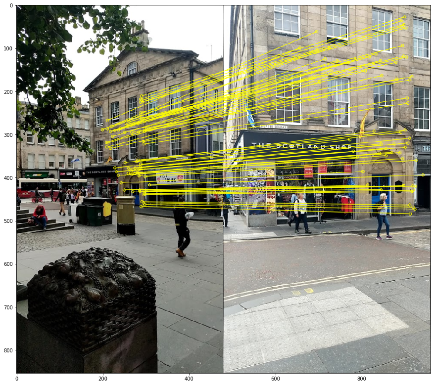
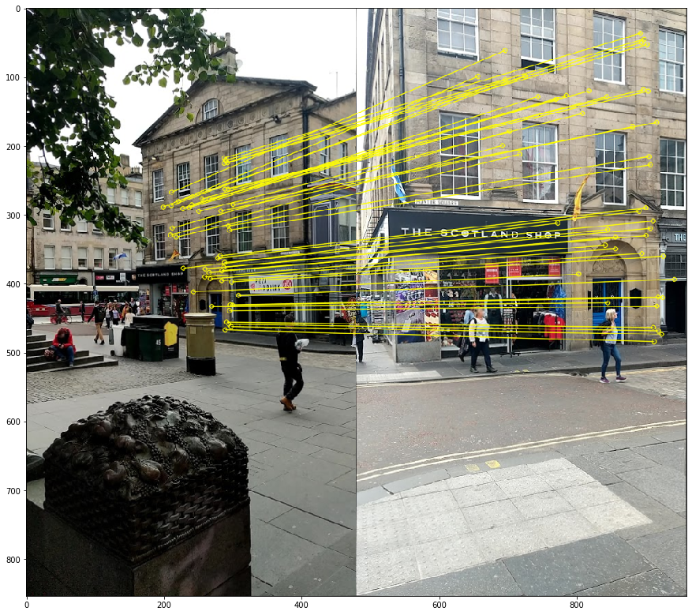
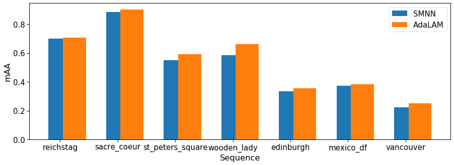

import matplotlib.pyplot as plt
import numpy as np
import cv2
import os
import torch
import kornia as K
import kornia.feature as KF
import h5py
import json
from PIL import Image
from adalam import AdalamFilter
from kornia_moons.feature import *
def load_h5(filename):
'''Loads dictionary from hdf5 file'''
dict_to_load = {}
try:
with h5py.File(filename, 'r') as f:
keys = [key for key in f.keys()]
for key in keys:
dict_to_load[key] = f[key][()]
except:
print('Cannot find file {}'.format(filename))
return dict_to_load
PATH_TO_FEATS = 'extracted/cv2-dog-affnet-hardnet8/googleurban/edinburgh/'
kps = load_h5(os.path.join(PATH_TO_FEATS, 'keypoints.h5'))
angles = load_h5(os.path.join(PATH_TO_FEATS, 'angles.h5'))
scales = load_h5(os.path.join(PATH_TO_FEATS, 'scales.h5'))
descs = load_h5(os.path.join(PATH_TO_FEATS, 'descriptors.h5'))Intro
In the previous tutorial we have created a pipeline for submitting to the IMC2021. However, we have not covered all the possibilities. First, we haven’t submissted custom matches, instead we just run a standard Lowe SNN test with cross-check. Second, we haven’t evaluate multiview (COLMAP) part. In this tutorial we will do both. I am assuming that you have completed the previous part. If not, please do, because we will be relying on the already extracted features. Let’s check if the feature are there
cd imc2021-sample-kornia-submission
ls extracted/cv2-dog-affnet-hardnet8/googleurban/edinburgh/angles.h5 descriptors.h5 keypoints.h5 scales.h5 scores.h5
Warning
There is a subtle problem with previous tutorial, so we cannot use pre-extracted features.
Specifically, because OpenCV SIFT does not exactly respect max_features parameter and can sometimes output 8002 features, instead of 8000. When we were importing the features alone, benchmark import_features.py script automatically re-sorted features based on the score and clip the extra 1-3 features. However, this functionality is not available for the importing custom matches. I have already corrected previous post, so you can use it for the re-extration. Or, if you are reading this whole tutorial after May 24, just ignore this.
Now we will install AdaLAM - one of the winners of IMC2020 Challenge. It uses keypoint geometry to filter out unreliable matches.
pip install git+https://github.com/cavalli1234/AdaLAM.gitLet’s check if it works on the sample image pair. We will read the pre-extracted features for it.
I have selected two images, which are matching:
IMG_DIR = '../imc-2021-data/googleurban/edinburgh/set_100/images/'
img1_key = '2b5315968bc5468c995b978620879439'
img2_key = '6264aee21d1b48b7985901c4bedfdbd4'
img1 = cv2.cvtColor(cv2.imread(os.path.join(IMG_DIR, f'{img1_key}.png')), cv2.COLOR_BGR2RGB)
img2 = cv2.cvtColor(cv2.imread(os.path.join(IMG_DIR, f'{img2_key}.png')), cv2.COLOR_BGR2RGB)
plt.imshow(np.concatenate([img1, img2], axis=1))
We will start with matching and drawing the matches with OpenCV for sanity check.
def opencv_from_imc(kps, sizes, angles):
return [cv2.KeyPoint(kp[0], kp[1], float(s), float(a)) for kp, s, a in zip(kps, sizes, angles)]
def get_data(kps, angles, scales, descs, img_key):
kp1 = kps[img_key]
s1 = scales[img_key]
a1 = angles[img_key]
descs1 = descs[img_key]
return kp1, s1, a1, descs1
def match(img1_key, img2_key, kps, angles, scales, descs):
kp1, s1, a1, descs1 = get_data(kps, angles, scales, descs, img1_key)
kp2, s2, a2, descs2 = get_data(kps, angles, scales, descs, img2_key)
dists, idxs = KF.match_smnn(torch.from_numpy(descs1), torch.from_numpy(descs2), 0.9)
return dists, idxs
def draw_matches(img1_key, img2_key, dists, idxs, kps, angles, scales, descs):
tentatives = cv2_matches_from_kornia(dists, idxs)
draw_params = dict(matchColor = (255,255,0), # draw matches in yellow color
singlePointColor = None,
matchesMask = [True for x in idxs], # draw only inliers
flags = 2)
img1 = cv2.cvtColor(cv2.imread(os.path.join(IMG_DIR, f'{img1_key}.png')), cv2.COLOR_BGR2RGB)
img2 = cv2.cvtColor(cv2.imread(os.path.join(IMG_DIR, f'{img2_key}.png')), cv2.COLOR_BGR2RGB)
kp1, s1, a1, _ = get_data(kps, angles, scales, descs, img1_key)
kp2, s2, a2, descs2 = get_data(kps, angles, scales, descs, img2_key)
img_out = cv2.drawMatches(img1,opencv_from_imc(kp1, s1, a1),
img2,opencv_from_imc(kp2, s2, a2),
tentatives,None,**draw_params)
plt.figure()
fig, ax = plt.subplots(figsize=(15, 15))
ax.imshow(img_out, interpolation='nearest')
return
dists, idxs = match(img1_key, img2_key, kps, angles, scales, descs)
draw_matches(img1_key, img2_key, dists, idxs, kps, angles, scales, descs)<Figure size 432x288 with 0 Axes>
Everything seems to be working quite well. But, as you can see, we have some wrong matches among tentatives. Let’s try AdaLAM
def match_adalam(img1_key, img2_key, kps, angles, scales, descs):
kp1, s1, a1, descs1 = get_data(kps, angles, scales, descs, img1_key)
kp2, s2, a2, descs2 = get_data(kps, angles, scales, descs, img2_key)
matcher = AdalamFilter()
# AdaLAM wants image sizes, so we have to read them.
img1 = cv2.cvtColor(cv2.imread(os.path.join(IMG_DIR, f'{img1_key}.png')), cv2.COLOR_BGR2RGB)
img2 = cv2.cvtColor(cv2.imread(os.path.join(IMG_DIR, f'{img2_key}.png')), cv2.COLOR_BGR2RGB)
idxs = matcher.match_and_filter(kp1, kp2,
descs1, descs2,
im1shape=img1.shape[:2],
im2shape=img2.shape[:2],
o1=a1.reshape(-1),
o2=a2.reshape(-1),
s1=s1.reshape(-1),
s2=s2.reshape(-1))
# AdaLAM does not provide confidence score, so we will create dummy one
dists = torch.ones_like(idxs)[:,0]
return dists, idxs
dists, idxs = match_adalam(img1_key, img2_key, kps, angles, scales, descs)
draw_matches(img1_key, img2_key, dists, idxs, kps, angles, scales, descs)<Figure size 432x288 with 0 Axes>
We have significantly more matches, which are also cleaner, although not ideal. There is one more thing: if we are going to submit custom matches, we have to run RANSAC ourself (if needed), here is a quote from the competition rules:
The "geom"/"method" field must be set to "cv2-8pt" if custom matches are enabled, as we assume you tune and run your favourite RANSAC algorithm, if applicable.Thus, we need to merge RANSAC (we pick inlier threshold from the previous tutorial) and matching:
import pydegensac
def match_adalam_with_degensac(img1_key, img2_key, kps, angles, scales, descs, ds_name='phototourism'):
kp1, s1, a1, descs1 = get_data(kps, angles, scales, descs, img1_key)
kp2, s2, a2, descs2 = get_data(kps, angles, scales, descs, img2_key)
matcher = AdalamFilter()
# AdaLAM wants image sizes, so we have to read them.
img1 = cv2.cvtColor(cv2.imread(os.path.join(IMG_DIR, f'{img1_key}.png')), cv2.COLOR_BGR2RGB)
img2 = cv2.cvtColor(cv2.imread(os.path.join(IMG_DIR, f'{img2_key}.png')), cv2.COLOR_BGR2RGB)
idxs = matcher.match_and_filter(kp1, kp2,
descs1, descs2,
im1shape=img1.shape[:2],
im2shape=img2.shape[:2],
o1=a1.reshape(-1),
o2=a2.reshape(-1),
s1=s1.reshape(-1),
s2=s2.reshape(-1)).detach().cpu().numpy()
src_pts = kp1[idxs[:,0]]
dst_pts = kp2[idxs[:,1]]
max_iters = 100000
if ds_name.lower() == 'phototourism':
inl_th = 0.5
elif ds_name.lower() == 'pragueparks':
inl_th = 1.5
elif ds_name.lower() == 'googleurban':
inl_th = 0.75
else:
raise ValueError('Unknown dataset')
F, inliers_mask = pydegensac.findFundamentalMatrix(src_pts, dst_pts, inl_th, 0.999999, max_iters)
out_idxs = idxs[inliers_mask]
# AdaLAM does not provide confidence score, so we will create dummy one
dists = np.ones_like(out_idxs)[:,0]
return dists, out_idxs
dists, idxs = match_adalam_with_degensac(img1_key, img2_key, kps, angles, scales, descs)
draw_matches(img1_key, img2_key, dists, idxs, kps, angles, scales, descs)<Figure size 432x288 with 0 Axes>
The last, but not least: we have to transpose output indexes, as benchmark expects them in the shape [2 x B]. Do not ask why :)
So, we are ready to process and save our matches. I have a bit optimized the loading process, but not much. Do not expect blazing speed :) The full script is accesible here.
import os
import h5py
from tqdm import tqdm
from PIL import Image
def match_adalam_with_degensac(kp1, kp2, s1, s2, a1, a2, descs1, descs2,
h1, w1, h2, w2, ds_name='phototourism'):
matcher = AdalamFilter()
idxs = matcher.match_and_filter(kp1, kp2,
descs1, descs2,
im1shape=(h1,w1),
im2shape=(h2,w2),
o1=a1.reshape(-1),
o2=a2.reshape(-1),
s1=s1.reshape(-1),
s2=s2.reshape(-1)).detach().cpu().numpy()
if len(idxs) < 7:
return np.empty((0,1), dtype=np.float32), np.empty((0,2), dtype=np.int32)
src_pts = kp1[idxs[:,0]]
dst_pts = kp2[idxs[:,1]]
max_iters = 100000
if ds_name.lower() == 'phototourism':
inl_th = 0.5
elif ds_name.lower() == 'pragueparks':
inl_th = 1.5
elif ds_name.lower() == 'googleurban':
inl_th = 0.75
else:
raise ValueError('Unknown dataset')
F, inliers_mask = pydegensac.findFundamentalMatrix(src_pts, dst_pts, inl_th, 0.999999, max_iters)
out_idxs = idxs[inliers_mask]
# AdaLAM does not provide confidence score, so we will create dummy one
dists = np.ones_like(out_idxs)[:,0]
return dists, out_idxs
INPUT_DIR = '../imc-2021-data'
OUT_DIR = 'extracted/cv2-dog-affnet-hardnet8'
os.makedirs(OUT_DIR, exist_ok=True)
datasets = os.listdir(INPUT_DIR)
datasets = ['googleurban']
for ds in datasets:
ds_in_path = os.path.join(INPUT_DIR, ds)
ds_out_path = os.path.join(OUT_DIR, ds)
os.makedirs(ds_out_path, exist_ok=True)
seqs = os.listdir(ds_in_path)
for seq in seqs:
if os.path.isdir(os.path.join(ds_in_path, seq, 'set_100')):
seq_in_path = os.path.join(ds_in_path, seq, 'set_100', 'images')
else:
seq_in_path = os.path.join(ds_in_path, seq)
seq_out_path = os.path.join(ds_out_path, seq)
kps = load_h5(os.path.join(seq_out_path, 'keypoints.h5'))
angles = load_h5(os.path.join(seq_out_path, 'angles.h5'))
scales = load_h5(os.path.join(seq_out_path, 'scales.h5'))
descs = load_h5(os.path.join(seq_out_path, 'descriptors.h5'))
img_fnames = sorted(os.listdir(seq_in_path))[::-1]
num_matches = []
with h5py.File(f'{seq_out_path}/matches_stereo_0.h5', 'w') as f_m:
for i1, img1_fname in tqdm(enumerate(img_fnames)):
img1_key = os.path.splitext(os.path.basename(img1_fname))[0]
img1_fname_full = os.path.join(seq_in_path, img1_fname)
img1 = Image.open(img1_fname_full)
w1, h1 = img1.size
kp1, s1, a1, descs1 = get_data(kps, angles, scales, descs, img1_key)
for img2_fname in img_fnames[i1+1:]:
img2_key = os.path.splitext(os.path.basename(img2_fname))[0]
img2_fname_full = os.path.join(seq_in_path, img2_fname)
img2 = Image.open(img2_fname_full)
w2, h2 = img2.size
match_key = f'{img1_key}-{img2_key}'
kp2, s2, a2, descs2 = get_data(kps, angles, scales, descs, img2_key)
_, idxs = match_adalam_with_degensac(kp1, kp2, s1, s2, a1, a2, descs1, descs2,
h1, w1, h2, w2, ds_name=ds)
num_matches.append(len(idxs))
if len(idxs) == 0:
idxs = np.empty([0, 2], dtype=np.int32)
idxs = idxs.T
assert idxs.shape[0] == 2
f_m[match_key] = idxs
print(f'Finished processing "{ds}/{seq}" -> {np.array(num_matches).mean()} matches/image')
#We can use a single match file for multiview and stereo, but let's pretend that we have different ones
copyfile(f'{seq_out_path}/matches_stereo_0.h5', f'{seq_out_path}/matches_multiview.h5')Matching will take us couple of hours on GPU.
Creating config json file
In addition to features and matches, we should submit a config file, which tells the benchmark, how the features should be matched and which RANSAC (no options, only cv2-8pt for using custom matches) we prefer. So, we will create two config files - one, which standard matcher and second one, which uses AdaLAM.
First part of the config is metadata – information about the method and authors. If your method is under review, you may want to set flag publish_anonymously to True.
metadata_dict = {
"publish_anonymously": False,
"authors": "Dmytro Mishkin, Milan Pultar and kornia team",
"contact_email": "ducha.aiki@gmail.com",
"method_name": "CV-DoG-AffNet-HardNet8-AdaLAM-DEGENSAC",
"method_description":
r"""OpeCV SIFT keypoints 8000 features, followed by the AffNet normalization
and HardNet8 descriptor as implemented in kornia.
Matched using AdaLAM with DEGENSAC""",
"link_to_website": "https://github.com/kornia/kornia",
"link_to_pdf": "https://arxiv.org/abs/2007.09699"
}Second part is config_common: it tells the benchmark, which keypoints and descriptors you use. We will also need this names when importing our features during tuning on the validation set.
config_common_dict = {"json_label": "dog-affnet-hardnet8-degensac-adalam",
"keypoint": "cv2dog",
"descriptor": "affnethardnet8",
"num_keypoints": 8000}Finally, we have to specify robust geometry estimation method. We have no other choice than cv2-8pt, as pre-filtering with DEGENSAC is already performed.
from copy import deepcopy
geom_template_dict = {"method": "cv2-8pt"
}Let’s assemble and save our base config.
import json
base_config = {
"metadata": metadata_dict,
"config_common": config_common_dict,
"config_phototourism_stereo": {
"use_custom_matches": True,
"custom_matches_name": "adalam",
"geom": deepcopy(geom_template_dict)
},
"config_phototourism_multiview": {
"use_custom_matches": True,
"custom_matches_name": "adalam",
"colmap": {}},
"config_pragueparks_stereo": {
"use_custom_matches": True,
"custom_matches_name": "adalam",
"geom": deepcopy(geom_template_dict)
},
"config_pragueparks_multiview": {
"use_custom_matches": True,
"custom_matches_name": "adalam",
"colmap": {}},
"config_googleurban_stereo": {
"use_custom_matches": True,
"custom_matches_name": "adalam",
"geom": deepcopy(geom_template_dict)
},
"config_googleurban_multiview": {
"use_custom_matches": True,
"custom_matches_name": "adalam",
"colmap": {}}
}Finally, benchmark expects multiple configs, so we have to create a list, and then we can save our config
import json
with open('base_config_adalam.json', 'w') as f:
json.dump([base_config], f, indent=2)Preliminary evaluation
Now let’s check how our features perform on validation set. We have to import our feature to the benchmark and run the benchmark.
I will cheat a little bit here and skip the multiview evaluation. The reason is that it requires colmap, which might be not easy to install.
Importing features
Here we have to provide the same keypoint and descriptor names, as we wrote in json config. The rest of arguments are straightforward: path to features, json, etc.
cd ../image-matching-benchmark/
python -utt import_features.py --kp_name cv2dog --desc_name affnethardnet8 --num_keypoints 8000 --path_features ../imc2021-sample-kornia-submission/extracted/cv2-dog-affnet-hardnet8 --path_results ../benchmark-results --subset both --is_challenge false --path_json ../imc2021-sample-kornia-submission/base_config_adalam.json --datasets phototourism googleurban --match_name adalamRunning the evaluation
Now we are ready to run the evaluation. Note, that now we are running multiview evaluation as well. So, let us check if colmap is available.
colmap --helpThe output should be something like that:
COLMAP 3.6 -- Structure-from-Motion and Multi-View Stereo
(Commit Unknown on Unknown with CUDA)
OK, now time to run the evaluation
python -utt run.py --run_mode=interactive --json_method=../imc2021-sample-kornia-submission/base_config_adalam.json --subset=val --path_data ../imc-2021-data/ --path_results ../benchmark-results --is_challenge falseAfter a while (an 6 hours for 32 cores machine), the process will finish and you will see the following log message:
-- Saving to: "packed-val/dog-affnet-hardnet8-degensac-adalam.json"To compare with results without AdaLAM, let’s also run multiview evaluation for the previous setup. I did not do that, because of the time it takes.
```bash
python -utt run.py --run_mode=interactive --json_method=../imc2021-sample-kornia-submission/base_config.json --subset=val --path_data ../imc-2021-data/ --path_results ../benchmark-results --is_challenge falseReading results
Json file with evaluation results are saved to image-matching-benchmark/packed-val/dog-affnet-hardnet8-degensac.json and image-matching-benchmark/packed-val/dog-affnet-hardnet8-degensac-adalam.json , and some visualizations – to ../benchmark-visualization/png.
First, we come back to our imc2021-sample-kornia-submission directory:
cd ../imc2021-sample-kornia-submissionMetric, which are used for the competition is mean average accuracy (mAA) at visibility threshold 0.1
{'mean': 0.0, 'std_scenes': 0.0, 'std_runs': 0.0}import os
hashname='dog-affnet-hardnet8-degensac'
res_fname = os.path.join('../image-matching-benchmark/packed-val', f'{hashname}.json')
with open(res_fname, 'r') as f:
results = json.load(f)
submission_name = results['config']['metadata']['method_name']
datasets = ['phototourism', 'pragueparks', 'googleurban']
tasks = ['stereo', 'multiview']
metric = 'qt_auc_10_th_0.1'
for dset in datasets:
mAA_stereo = results[dset]['results']['allseq']['stereo']['run_avg'][metric]['mean']
mAA_colmap = results[dset]['results']['allseq']['multiview']['run_avg']['bag_avg']['qt_auc_colmap_10']['mean']
print (f'{submission_name} stereo mAA for {dset} is {mAA_stereo:.4f}')
print (f'{submission_name} multiview mAA for {dset} is {mAA_colmap:.4f}')
# Remember, I did not run multiview evaluation for the original submission.CV-DoG-AffNet-HardNet8 (kornia) stereo mAA for phototourism is 0.7108
CV-DoG-AffNet-HardNet8 (kornia) multiview mAA for phototourism is 0.0000
CV-DoG-AffNet-HardNet8 (kornia) stereo mAA for pragueparks is 0.5850
CV-DoG-AffNet-HardNet8 (kornia) multiview mAA for pragueparks is 0.0000
CV-DoG-AffNet-HardNet8 (kornia) stereo mAA for googleurban is 0.3099
CV-DoG-AffNet-HardNet8 (kornia) multiview mAA for googleurban is 0.0000import os
hashname='dog-affnet-hardnet8-degensac-adalam'
res_fname = os.path.join('../image-matching-benchmark/packed-val', f'{hashname}.json')
with open(res_fname, 'r') as f:
results_adalam = json.load(f)
submission_name_adalam = results_adalam['config']['metadata']['method_name']
datasets = ['phototourism', 'pragueparks', 'googleurban']
tasks = ['stereo'] # ['stereo', 'multiview'] #Remember, that we skip colmap evaluations
metric = 'qt_auc_10_th_0.1'
for dset in datasets:
mAA_stereo = results_adalam[dset]['results']['allseq']['stereo']['run_avg'][metric]['mean']
mAA_colmap = results_adalam[dset]['results']['allseq']['multiview']['run_avg']['bag_avg']['qt_auc_colmap_10']['mean']
print (f'{submission_name_adalam} stereo mAA for {dset} is {mAA_stereo:.4f}')
print (f'{submission_name_adalam} multiview mAA for {dset} is {mAA_colmap:.4f}')CV-DoG-AffNet-HardNet8-AdaLAM-DEGENSAC stereo mAA for phototourism is 0.7326
CV-DoG-AffNet-HardNet8-AdaLAM-DEGENSAC multiview mAA for phototourism is 0.8566
CV-DoG-AffNet-HardNet8-AdaLAM-DEGENSAC stereo mAA for pragueparks is 0.6624
CV-DoG-AffNet-HardNet8-AdaLAM-DEGENSAC multiview mAA for pragueparks is 0.5584
CV-DoG-AffNet-HardNet8-AdaLAM-DEGENSAC stereo mAA for googleurban is 0.3310
CV-DoG-AffNet-HardNet8-AdaLAM-DEGENSAC multiview mAA for googleurban is 0.1597We can also see results sequence-by-sequence
import seaborn as sns
import matplotlib.pyplot as plt
import numpy as np
sns.set_context('paper', font_scale=1.7)
seqs = []
mAAs_adalam = []
mAAs = []
for dset in datasets:
for task in tasks:
for seq in results[dset]['results'].keys():
if seq == 'allseq':
continue
mAA = results[dset]['results'][seq][task]['run_avg'][metric]['mean']
mAA_adalam = results_adalam[dset]['results'][seq][task]['run_avg'][metric]['mean']
mAAs.append(mAA)
mAAs_adalam.append(mAA_adalam)
seqs.append(seq)
fig, ax = plt.subplots(figsize=(15,5))
xticks = 2*np.arange(len(seqs))
ax.set_xticks(xticks)
ax.bar(xticks, mAAs)
ax.bar(xticks+0.5, mAAs_adalam)
ax.set_xticklabels(seqs)
ax.legend(['SMNN', 'AdaLAM'])
ax.set_ylabel('mAA')
ax.set_xlabel('Sequence')Text(0.5, 0, 'Sequence')
How do our feature correspondences look like?
Creating final submission
Its time to create our final submission!
configs = []
current_config = deepcopy(base_config)
current_config['metadata']['method_name'] = 'KORNIA TUTORIAL AdaLAM CV-DoG-AffNet-HardNet8'
label = current_config['config_common']['json_label']
current_config['config_common']['json_label'] = f'{label}'
configs.append(current_config)
print (current_config)
with open('final_submission_adalam.json', 'w') as f:
json.dump(configs, f, indent=2){'metadata': {'publish_anonymously': False, 'authors': 'Dmytro Mishkin, Milan Pultar and kornia team', 'contact_email': 'ducha.aiki@gmail.com', 'method_name': 'KORNIA TUTORIAL AdaLAM CV-DoG-AffNet-HardNet8', 'method_description': 'OpeCV SIFT keypoints 8000 features, followed by the AffNet normalization \n and HardNet8 descriptor as implemented in kornia.\n Matched using AdaLAM with DEGENSAC', 'link_to_website': 'https://github.com/kornia/kornia', 'link_to_pdf': 'https://arxiv.org/abs/2007.09699'}, 'config_common': {'json_label': 'dog-affnet-hardnet8-degensac-adalam', 'keypoint': 'cv2dog', 'descriptor': 'affnethardnet8', 'num_keypoints': 8000}, 'config_phototourism_stereo': {'use_custom_matches': True, 'custom_matches_name': 'adalam', 'geom': {'method': 'cv2-8pt'}}, 'config_phototourism_multiview': {'use_custom_matches': True, 'custom_matches_name': 'adalam', 'colmap': {}}, 'config_pragueparks_stereo': {'use_custom_matches': True, 'custom_matches_name': 'adalam', 'geom': {'method': 'cv2-8pt'}}, 'config_pragueparks_multiview': {'use_custom_matches': True, 'custom_matches_name': 'adalam', 'colmap': {}}, 'config_googleurban_stereo': {'use_custom_matches': True, 'custom_matches_name': 'adalam', 'geom': {'method': 'cv2-8pt'}}, 'config_googleurban_multiview': {'use_custom_matches': True, 'custom_matches_name': 'adalam', 'colmap': {}}}Submission Zip file should have folder structure as follow:
├── config.json
├── [Dataset 1]
│ ├── [Sequence 1]
│ │ ├── keypoints.h5
│ │ ├── descriptors.h5
│ │ ├── matches.h5
│ ├── [Sequence 2]
│ │ ├── ...
├── [Dataset 2]
│ ├── ...So we have to just copy our features, add config and zip them.
cp final_submission_adalam.json extracted/cv2-dog-affnet-hardnet8/config.json
cd extracted/cv2-dog-affnet-hardnet8
zip -r submission.zip *Last step before the submission - check the submission for correctness with provided script
cd ../../../image-matching-benchmark
python -utt submission_validator.py --submit_file_path ../imc2021-sample-kornia-submission/extracted/cv2-dog-affnet-hardnet8/submission.zip --benchmark_repo_path . --raw_data_path ../imc-2021-data/ --datasets googleurban phototourism pragueparksIf everything is correct, you will see:
Validating method 1/1: "dog-affnet-hardnet8-degensac"
['googleurban', 'phototourism', 'pragueparks']
Running: googleurban, stereo track
Running: googleurban, multiview track
Running: phototourism, stereo track
Running: phototourism, multiview track
Running: pragueparks, stereo track
Running: pragueparks, multiview track
Validating key "config_googleurban_stereo"
Validating key "config_googleurban_multiview"
Validating key "config_phototourism_stereo"
Validating key "config_phototourism_multiview"
Validating key "config_pragueparks_stereo"
Validating key "config_pragueparks_multiview"And file submission_log.txt will appear near our .zip file.
cat ../imc2021-sample-kornia-submission/extracted/cv2-dog-affnet-hardnet8/submission_log.txtSubmission is in proper format, please submit to IMW 2021 website.That’s all, folks! We can submit! But, please, do not just submit this sample submission - make your own :)
Everything you (didn’t) want to know about image matching